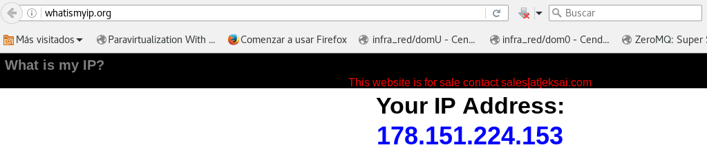

Navegar de manera anónima con tor en Debian Stretch
Posted on lun 05 junio 2017 in Tutorial de LInux • 2 min read
En el artículo anterior expliqué como consultar DNS de manera cifrada , ahora vamos a utilizar tor para navegar de manera anónima.
Se tiene dos opciones, una es bajar el tar.xz de tor-browser en la página oficial y la otra es instalar tor a lo Debian. Ese será el caso de este artículo.
El artículo se basa en la documentación de instalación de tor para Debian.
Se crea el archivo /etc/apt/sources.list.d/torbrowser.list con los siguientes repositorios:
deb http://deb.torproject.org/torproject.org stretch main
deb-src http://deb.torproject.org/torproject.org stretch main
Se descarga la llave gpg de los paquetes:
$gpg --keyserver keys.gnupg.net --recv A3C4F0F979CAA22CDBA8F512EE8CBC9E886DDD89
Se exporta la llave y se agrega al juego de llaves que tiene apt.
Comando como root:
#gpg --export A3C4F0F979CAA22CDBA8F512EE8CBC9E886DDD89 | apt-key add -
Comando usando sudo:
$gpg --export A3C4F0F979CAA22CDBA8F512EE8CBC9E886DDD89 | sudo apt-key add -
Se actualiza la lista de paquetes:
#apt-get update
Se instala tor:
#apt-get install tor deb.torproject.org-keyring
Desde mozilla firefox se da clicñ a preferencias, luego a avanzado, red y configuración. Ahí se selecciona configuración manual de proxy y en servidor socks se coloca localhost y el puerto 9050, con socks_v5. Como se muestra en la siguiente figura:

Ahora se abre el navegador en whatismyip.org:

La imagen muestra la IP que se está utilizando que es el 178.151.224.153.
Ahora se verifica que se esté usando tor con https:/check.torproject.org/?lang=es_AR y se tiene la siguiente figura:

En la figura se muestra que ya se está usando tor desde el navegador.
¡Haz tu donativo! Si te gustó el artículo puedes realizar un donativo con Bitcoin (BTC) usando la billetera digital de tu preferencia a la siguiente dirección: 17MtNybhdkA9GV3UNS6BTwPcuhjXoPrSzV
O Escaneando el código QR desde la billetera: